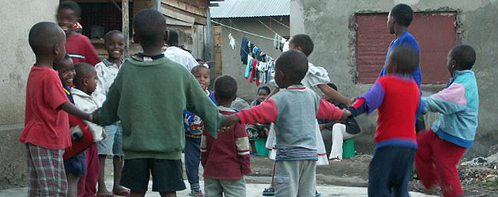

THE PARTNERSHIP

Putting Development on the Map
The Open Aid Partnership (OAP) brings together development partners, governments, civil society organizations, foundations, and the private sector to improve aid transparency and effectiveness. The OAP's goal is to collect and open up local development data to engage citizens and other stakeholders in evidence-based conversations on development.
Key Objectives of the Open Aid Partnership:
- Strengthen capacity of partner countries to collect, curate and publish development data in an open and accessible format.
- Develop an Open Aid Map to visualize the locations of development activities on a common mapping platform.
- Build capacity of citizens, civil society and the media to understand, use and give feedback on open development data.
- Transparency of development through open data.
- Coordination by better targeting and managing projects activities at the local level.
- Accountability by encouraging civil society and citizens to provide feedback on project implementation and outcomes.
The Open Aid Partnership is a collaboration between the governments of Bolivia, Canada, Czech Republic, Estonia, Finland, Honduras, Kenya, Malawi, Nepal, the Netherlands, Spain, Sweden, the United Kingdom, as well as the United States Agency for International Development, African Development Bank, Akvo, Development Gateway, Development Initiatives, the Foundation Center, InterAction, ONE, Publish What You Fund, UN-Habitat and the World Bank Group.
Visualizing the Geography of Aid
The Open Aid Partnership overlays disaggregated poverty and human development data with aid projects at the sub-national level. This supports aid effectiveness through increased:
Supporting Open Standards
The OAP works closely with the International Aid Transparency Initiative (IATI) and its partner institutions to ensure harmonized and interoperable sub-national aid data, and supports partners in collecting and publishing aid data under IATI.
Engaging Citizens in Development
The Open Aid Partnership aims to engage citizens in the planning and delivery of development programs with the ultimate goal of enhancing social accountability and public service delivery. To this end, the OAP is strengthening the capacity of citizens and other stakeholders to use and respond to development data.
With OAP support, the World Bank launched Data Literacy Bootcamps in Bolivia, Malawi, and Nepal in June 2013. More than 300 participants from civil society, academia, the media and tech community took part in 3-day intensive, learning-by-doing open data workshops. They learned how to extract, clean, and visualize data, find narratives, and use open data to build tools that empower citizens.
The OAP is also convening government officials, parliamentarians, development partners and other stakeholders to identify ways to integrate open data into policymaking. These development data workshops are promoting the use of geocoded data for project planning, coordination, and monitoring and evaluation.
Words From Our Partners
"The Open Aid Partnership will help enhance our ability to visualize our development projects and work more effectively with our development partners to identify priorities and target resources. It will also help us improve the effectiveness of and access to public services, and enable our citizens to participate by providing feedback, and voice their needs."
— Viviana Caro Hinojosa
Minister of Development Planning, Plurinational State of Bolivia
"We are pleased to work with the Open Aid Partnership in Kenya to make information on project activities, locations and spending more readily available and accessible to the public for improved transparency and enhanced accountability. The Partnership will also help to better monitor the progress of the project implementation while ensuring alignment to the Government's policies for improved service delivery."
— Peter M. Kamau
Assistant Director, National Treasury, Government of Kenya
"The World Bank Group realizes the enormous potential of visualizing the projects we finance so knowledge flows in multiple directions and aid can become transparent, accountable and effective. Through the Open Aid Partnership we are very pleased that many partners are willing to join in this effort to radically open up development and transform the way we report the nature of our development work in our mission to end poverty and promote shared prosperity."
— Sanjay Pradhan
Vice President, World Bank Group